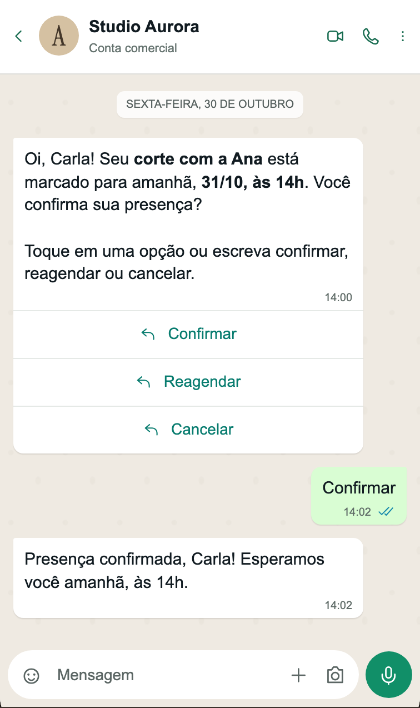

Carla
Último atendimento: corte
Oi, Carla! Que tal um momento de cuidado para renovar os fios depois do seu último corte?
Hidratação com 15% de desconto, de 03 a 12/11.
Para não receber mais, responda SAIR.
LUNA · SUA ASSISTENTE AUTÔNOMA COM IA
Atendimento automático. Agenda conectada.
Campanhas que continuam a conversa.
Depois de configurada, a LUNA responde no WhatsApp e conduz agendamentos com IA, mesmo quando você não está online.
NOVO Campanhas com IA, da oferta ao agendamento

WhatsApp ilustrativo · Agenda real da LUNA
ATENDIMENTO AUTOMÁTICO COM IA
Você define serviços, preços, horários e o jeito de atender. A partir daí, a LUNA conversa no WhatsApp, consulta a agenda e conduz o atendimento automaticamente. Sem você precisar responder a cada mensagem.
Responde sobre serviços, preços e horários. Entende áudios, imagens e o contexto do atendimento.
Conduz agendamentos, remarcações e cancelamentos sem operação manual da equipe, após a confirmação de quem está agendando.
Você acompanha tudo e assume quando quiser. Se precisar de uma pessoa, a LUNA chama.
Nome, tom e orientações da assistente personalizados para o seu jeito de atender.
Confirmações, lembretes, cuidados após o serviço e pesquisas de satisfação automáticos.
Fixe conversas importantes e encontre primeiro quem espera pela equipe. Assuma o atendimento e devolva à IA quando quiser.
IA + WHATSAPP · PRESENTE EM CADA ETAPA
Da primeira mensagem ao pós-atendimento, a LUNA mantém sua cliente informada e sua equipe por dentro. Confirma horários, envia orientações, recebe respostas e pede avaliações.
Com a IA no WhatsApp, a rotina anda mesmo quando suas mãos estão ocupadas.
Veja a LUNA em açãoA cliente confirma a presença, pede para reagendar ou cancela pelo WhatsApp. Sua equipe acompanha as respostas.
Confirmação de agendamentoO aviso do atendimento leva as orientações de preparo do serviço. Se a cliente responder, a IA continua a conversa.
Lembrete + pré-atendimentoAs recomendações de cuidado chegam pelo WhatsApp após a conclusão do atendimento, conforme o serviço realizado.
Orientações pós-atendimentoA pesquisa de satisfação recolhe nota e comentário. A gestão recebe o aviso e acompanha as avaliações na LUNA.
Avaliações conectadas à gestãoVocê define os horários e as mensagens; as orientações são cadastradas por serviço. Com as automações configuradas, a LUNA cuida dos envios e respeita as preferências de comunicação da cliente.
NA PRÁTICA · QUANDO O DIA MUDA DE PLANO
A cliente responde ao lembrete. A IA entende o aviso, retorna para ela e informa a profissional e a recepção. Você continua atendendo com a informação chegando ao lugar certo.
MENOS REPASSES. MAIS ATENÇÃO.
Sem depender de alguém parar tudo para ler a conversa e repassar o recado. A IA registra o aviso e mantém a equipe informada.
O aviso de atraso não altera o agendamento nem promete tolerância. A equipe mantém o controle do atendimento.
Conversa ilustrativa no WhatsApp e captura real da notificação na LUNA. Dados fictícios; nenhum envio real foi realizado.
NA PRÁTICA · CADA CLIENTE TEM UMA HISTÓRIA
Uma foto, um aniversário hoje, um horário para ficar pronta. A IA considera o que a cliente conta e registra os detalhes que ajudam a profissional a preparar o atendimento.
O QUE ELA QUERPenteado meio preso, ondas suaves e pouco volume.
O QUE IMPORTA HOJEAniversário às 20h. Pronta até as 18h30.
O QUE CHEGA À EQUIPEImagem de referência + observações na ficha.
O atendimento começa com mais contexto.
A profissional pode consultar e ampliar a referência, ler as observações e acolher a cliente com os detalhes que fazem diferença.
Conversa ilustrativa no WhatsApp e captura real do atendimento na LUNA. Dados fictícios; foto de penteado ilustrativa, gerada por IA.
NOVO CAMPANHAS COM INTELIGÊNCIA ARTIFICIAL
Imagens criadas com IA. Aberturas personalizadas para cada cliente. E uma assistente que continua no WhatsApp até marcar o horário.
Descreva a campanha, receba duas opções de fundo e escolha a que combina com seu salão. A LUNA compõe a oferta na arte; você mantém o controle do serviço, desconto e prazo.
A IDEIA DO SALÃO
“Uma imagem acolhedora para nossa campanha de hidratação. Tons de areia e dourado, produtos de cuidado capilar e luz natural.”
A IA gera o fundo. A LUNA monta a arte com sua oferta. Você também pode usar uma foto do salão ou enviar uma imagem pronta.
Fundos gerados por IA para esta demonstração. Composição ilustrativa, com oferta fictícia; captura da LUNA com dados de demonstração.
A IA escreve a abertura de cada mensagem com o nome e o histórico disponível. A oferta aprovada pelo salão permanece igual, para comunicar as condições com clareza.
Carla
Último atendimento: corte
Oi, Carla! Que tal um momento de cuidado para renovar os fios depois do seu último corte?
Hidratação com 15% de desconto, de 03 a 12/11.
Para não receber mais, responda SAIR.
Júlia
Último atendimento: hidratação
Oi, Júlia! Depois da sua última hidratação, que tal reservar mais um momento de cuidado para você?
Hidratação com 15% de desconto, de 03 a 12/11.
Para não receber mais, responda SAIR.
Renata
Ainda sem histórico de atendimento
Oi, Renata! Temos um convite especial para você conhecer nosso cuidado com os fios.
Hidratação com 15% de desconto, de 03 a 12/11.
Para não receber mais, responda SAIR.
Sem histórico? A mensagem continua acolhedora, sem inventar uma relação. A oferta, o prazo e a opção de sair ficam claros para todas.
Exemplos ilustrativos de aberturas possíveis. Pessoas e oferta fictícias.
A campanha abre a conversa. A IA entende a oferta, consulta a disponibilidade e conduz o agendamento no WhatsApp. A cliente confirma; o horário entra na agenda da LUNA.
Imagem + convite personalizado. A cliente toca em “Quero agendar” na própria mensagem.
A oferta acompanha a conversa. A IA apresenta o horário disponível e pede confirmação.
O agendamento é concluído. O horário entra na agenda com a origem da campanha e o desconto associado.
Conversas ilustrativas no WhatsApp. Pessoas, preço e horários fictícios. Os botões “Quero agendar” e “Sim, agendar” fazem parte da LUNA.
Relacionamento bom também respeita limites. A LUNA oferece saída pelo WhatsApp, registra a preferência e verifica essa escolha antes de novos envios.
O CONTROLE FICA COM A CLIENTE
O pedido interrompe promoções, confirmações, lembretes e pesquisas automáticas. A preferência fica registrada no cadastro e é respeitada nos próximos envios.
SÓ AS CAMPANHAS? TAMBÉM PODE.
“Tudo certo, você não vai mais receber nossas promoções. Os avisos dos seus horários continuam chegando normalmente.”
Assim, ela deixa de receber ofertas e mantém as comunicações dos agendamentos.
CONTATO COM CRITÉRIO
Intervalo de pelo menos 7 dias entre campanhas para a mesma pessoa, limite diário e janela de envio. A escolha de não receber é conferida novamente antes do disparo.
CAMPANHAS COM RESPEITO
Preferências respeitadas e contato sem excesso. A LUNA considera a permissão registrada para promoções e permite parar pelo WhatsApp. Intervalos entre campanhas, limites de envio e atenção às conversas em andamento ajudam a cuidar desse relacionamento.
Recursos que ajudam seu salão a cuidar da privacidade e atender à LGPD. O uso responsável dos dados também depende das práticas do salão.
Teste no seu WhatsApp antes de ativar. Os envios seguem um ritmo definido e respeitam pedidos de saída. Veja respostas, agendamentos, comparecimentos e receita vinculada à campanha.
GESTÃO CONECTADA, DE PONTA A PONTA
WhatsApp, IA e campanhas na frente. Agenda, financeiro e equipe conectados por trás.
Agenda por dia, semana ou lista. Veja quem atende, acompanhe cada status e organize os horários da equipe.
Veja o que entrou, o que falta receber e as contas que estão para vencer. Entenda o resultado com as taxas de cartão consideradas.
Comissões calculadas no fechamento, com percentuais por serviço e profissional. Mais clareza na hora de fazer o acerto.
Preferências, histórico e informações de clientes perto de quem atende. Um cuidado que continua entre uma visita e outra.

NO CELULAR, DO SEU JEITO
Entre um atendimento e outro, a rotina continua. A LUNA acompanha você no celular, com o que importa a poucos toques.
NOVO AJUDA E SUPORTE INCLUÍDOS
A IA cuida dos seus clientes. E sua equipe também tem apoio: manual com prints, assistente de ajuda com IA e suporte humano dentro da LUNA, para todo salão.
Toque no ? para abrir os guias daquela área, com passo a passo e prints reais. Consulte sem sair da tela nem perder o que estava preenchendo.
Descreva sua dúvida. A IA de ajuda usa os guias da LUNA, considera de qual tela você veio e pode mostrar o caminho até a função certa.
Se a orientação não resolver, chame o suporte na mesma conversa. O histórico acompanha o pedido, e você pode enviar prints para explicar o que aconteceu.
Da gestão aos profissionais: cada pessoa tem seu histórico e recebe ajuda para as funções que pode usar.
UM DOS PRINTS DO MANUAL
Na Agenda, toque no + para começar.
Do primeiro agendamento à gestão do dia a dia, orientação perto de quem precisa.
SEU NEGÓCIO MERECE ESSA TRANQUILIDADE
Agenda lotada, equipe em ação, clientes chegando. Sua tecnologia precisa estar à altura desse momento.
A LUNA investe em infraestrutura moderna na Oracle Cloud, hospedada no Brasil, para priorizar a disponibilidade e a proteção do seu negócio.
Um ambiente próprio para cada salão, dados separados e proteção reforçada com Cloudflare para ajudar a bloquear acessos maliciosos. Porque o seu tempo de atendimento é valioso demais.
Seu próprio ambiente.
Sua própria base de dados.
Acessos individuais para sua equipe.
Monitoramento contínuo e verificações de funcionamento ajudam a identificar problemas e cuidar da operação.
Atualizações graduais, pensadas para reduzir interrupções. Nosso compromisso é melhorar a LUNA com o menor impacto possível nos seus atendimentos.
Dados separados por salão, cópias de segurança criptografadas e acesso conforme a função de cada pessoa da equipe.
Uma camada adicional de segurança para ajudar a proteger o acesso à LUNA e reduzir o impacto de acessos maliciosos na sua rotina.
Você investe no seu salão. A LUNA investe na estrutura que acompanha você.
QUATRO PERFIS DE ACESSO
Cada pessoa entra com sua conta. Você mantém a visão do salão e a equipe encontra o que precisa para trabalhar.
As permissões são conferidas a cada ação. Informações de gestão ficam com quem tem acesso a elas.
NA HORA DE ESCOLHER, OLHE ALÉM DA AGENDA
Atender, agendar, trazer clientes de volta e apoiar sua equipe. Uma solução completa, em constante evolução, para cuidar da rotina e valorizar seu talento.
TODOS OS RECURSOS INCLUÍDOS
IA no WhatsApp, campanhas, agenda, financeiro, comissões, manual e suporte. Tudo o que você conhece aqui faz parte da sua LUNA.
Uma solução completa para o seu salão, com melhorias e novos recursos em constante evolução.
E clareza desde o início: você conhece as condições de uso e as franquias de IA antes de contratar.
| O que muda no seu dia | LUNATodos os recursos. Uma solução. | Outras soluçõesAgendas isoladas e automações básicas |
|---|---|---|
| 01O que você contrata | A LUNA por inteiro. Todos os recursos apresentados incluídos, com condições e franquias informadas antes da contratação. | Confira o que está incluído. Compare os recursos, as integrações e o suporte disponíveis na contratação oferecida. |
| 02Liberdade para escolher | Fique pelo tempo que quiser. Sem fidelidade, sem prazo mínimo de permanência e sem multa por cancelamento. Você fica enquanto a LUNA fizer sentido para o seu salão. | Confira as condições de saída. Verifique prazo mínimo, renovação e possíveis multas antes de contratar. |
| 03Atendimento no WhatsApp | Uma conversa que vira agendamento. A IA responde, entende áudios, consulta horários e conduz o agendamento. Sua equipe acompanha. | Respostas prontas ou trabalho manual. Em ferramentas básicas, responder e organizar o horário podem continuar nas mãos da equipe. |
| 04Campanhas e retorno | Da oferta à agenda, com IA. Escolha o público, prepare a campanha e deixe a assistente continuar a conversa de quem se interessar. | Divulgar é só uma parte. O envio pode ficar separado do atendimento, do agendamento e do uso da oferta. |
| 05Organização do salão | A rotina se conecta. Agenda, conversas, clientes, financeiro e comissões dentro da mesma ferramenta. | Mais ferramentas para conciliar. Agendas isoladas e planilhas podem exigir repetição de informações e conferências à parte. |
| 06Ajuda para a equipe | Apoio incluído para todo salão. Manual com prints na tela em uso, IA de ajuda e suporte humano na mesma conversa, com histórico. | Vale conferir como a ajuda funciona. Há manual dentro do sistema? A conversa mantém o contexto ao chegar a uma pessoa? |
| 07Acessos e dados | Cada salão tem o próprio espaço. Aplicação e base de dados individuais, quatro perfis de acesso e backups criptografados. | Peça clareza sobre a estrutura. Confira a separação dos dados, as permissões da equipe e a rotina de backup oferecidas. |
“Outras soluções” representa aqui ferramentas básicas, como agendas isoladas, planilhas e automações simples. Os recursos variam conforme o fornecedor e o plano; este quadro não descreve todos os concorrentes.
A ESCOLHA CONTINUA SENDO SUA
Você escolhe por quanto tempo a LUNA acompanha o seu salão. Cancele quando quiser, sem multa por cancelamento.
Nossa garantia de fidelidade é a nossa qualidade.
Nosso compromisso é conquistar sua confiança todos os dias.VAMOS CONVERSAR?
Algumas respostas para você
conhecer melhor a LUNA.
Não. A contratação é sem fidelidade, sem prazo mínimo de permanência e sem multa por cancelamento. Você fica na LUNA enquanto ela fizer sentido para o seu salão. Nossa garantia de fidelidade é a nossa qualidade.
Sim. IA no WhatsApp, campanhas, agenda, financeiro, comissões, manual e suporte fazem parte da sua LUNA. As condições de uso e as franquias de IA são informadas com clareza antes da contratação. A solução continua evoluindo com melhorias e novos recursos.
Sim. Todo salão tem ajuda, manual e suporte incluídos. O botão ? abre os guias da tela em uso, com passo a passo e prints, sem perder o que você estava preenchendo. Você também pode perguntar à assistente de ajuda com IA e, se precisar, chamar uma pessoa na mesma conversa, com o histórico e os prints enviados. Cada integrante da equipe vê seus próprios atendimentos e os guias das funções que pode usar.
Não. A ajuda à equipe é separada da assistente que atende seus clientes no WhatsApp e não consome a franquia dela. A IA de ajuda orienta com base nos guias da LUNA; ela não altera cadastros, agenda ou valores por conta própria. Se a dúvida continuar, você pode chamar o suporte humano.
Sim. Cada salão recebe uma instância própria da LUNA e uma base de dados exclusiva, com credenciais individuais. A aplicação fica em um ambiente próprio para o seu salão, hospedado na Oracle Cloud, no Brasil. Também há backups criptografados e monitoramento da infraestrutura.
Sim. A LUNA tem quatro perfis: Proprietário, Gerente, Recepcionista e Profissional. O proprietário administra toda a operação, incluindo integrações. O gerente cuida da gestão, do financeiro e da equipe. A recepção organiza a agenda, os clientes, os atendimentos e as conversas. O profissional acompanha a própria agenda, seus atendimentos e seus pagamentos. Cada pessoa entra com sua conta e usa as funções permitidas para seu perfil.
Em boa parte da rotina de atendimento, sim. Depois de configurada e conectada ao WhatsApp do salão, a LUNA responde mensagens, entende áudios, consulta horários e conduz agendamentos automaticamente. Também envia confirmações e lembretes. Nas campanhas, você prepara a oferta e ativa; ela cuida dos envios e do atendimento de quem responde. A equipe acompanha e assume quando necessário.
A assistente consulta os horários e apresenta uma proposta. O agendamento, a remarcação ou o cancelamento só acontece com a confirmação de quem está agendando. A equipe acompanha as conversas e pode assumir o atendimento a qualquer momento.
Você escolhe o público, os serviços, o desconto e o período da oferta. A IA pode personalizar a abertura da mensagem e gerar fundos para a arte. Depois do teste no seu WhatsApp e da ativação, a LUNA envia aos poucos. Quem toca em “Quero agendar” conversa com a assistente, que reconhece a oferta. Você acompanha as respostas e os agendamentos pelo painel.
Sim. A LUNA funciona pelo navegador, com interface adaptada a cada tela. No iPhone e no Android, você também pode adicioná-la à tela inicial como aplicativo. É necessário acesso à internet.
Sim. Você registra pagamentos, organiza contas a pagar e acompanha valores a receber. Também consulta taxas de cartão, previsão de repasses e relatórios por período. As comissões são calculadas no fechamento conforme o serviço e o profissional, com controle de adiantamentos e pagamentos à equipe.
Fale com nossa equipe pelo botão “Quero conhecer a LUNA”. Vamos apresentar o produto e conversar sobre as condições disponíveis para o seu salão, a configuração e os primeiros passos.
TECNOLOGIA FEITA PERTO DE VOCÊ
A LUNA é construída de perto com quem vive a rotina do salão, sente suas dificuldades e conhece suas necessidades.
Essa proximidade orienta cada melhoria. A solução evolui continuamente para simplificar o dia a dia e abrir espaço para o que você faz de melhor.
Seu talento cuida das pessoas.
A LUNA ajuda a cuidar do resto.